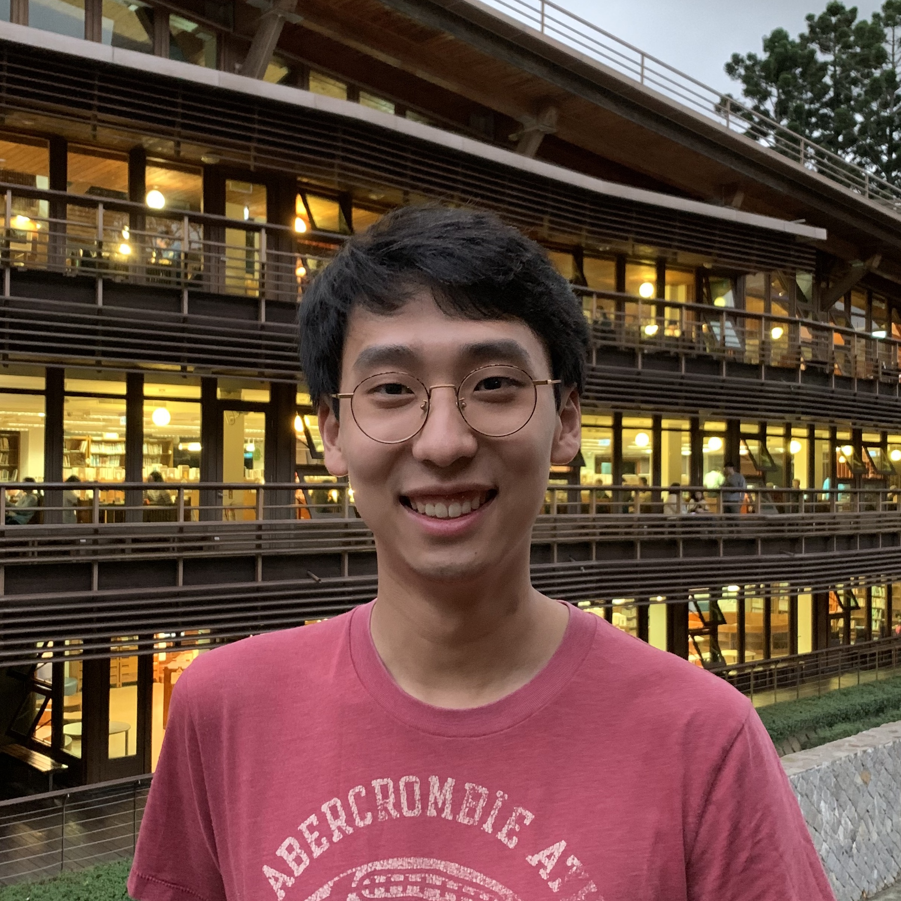
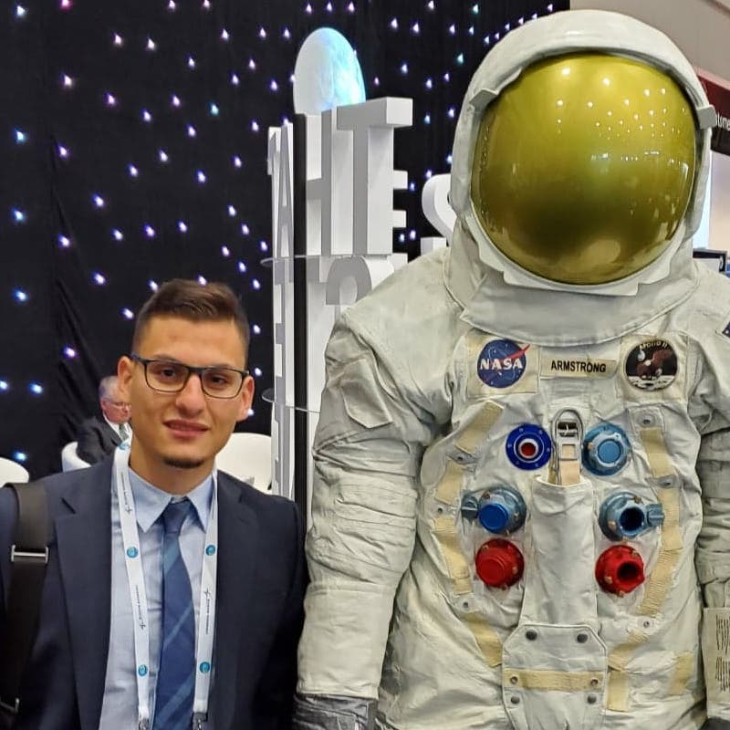
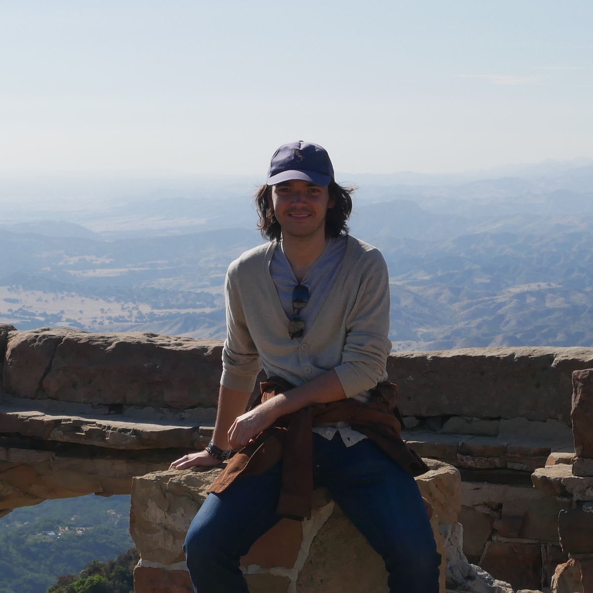
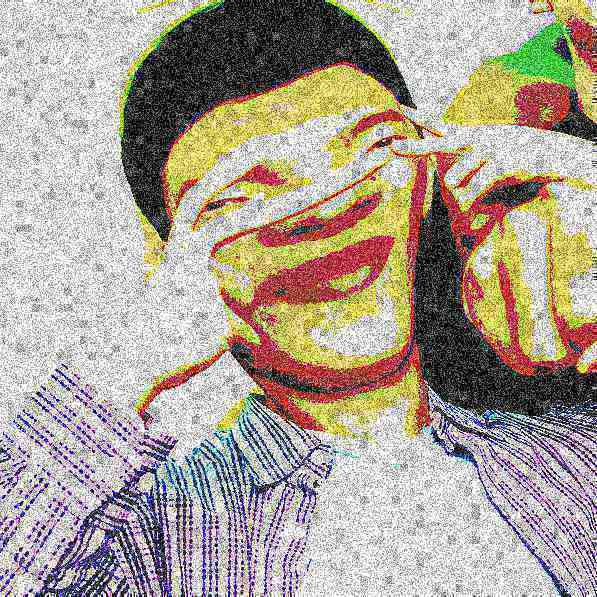

People
Principal Investigator
Andrew Higgins
Prof. Higgins is...
Current Lab Members
Zhuo Fan Bao
Emmanuel Duplay
John Kokkalis
I am a third year honours student in mechanical engineering. My interests include interstellar space flight and NASA. As for research, I am currently investigating the plausibility of laser-ablation of interplanetary media during the acceleration phase of laser-driven interstellar travel, under the supervision of Professor Andrew Higgins. Upon graduation, I hope to pursue graduate studies in aerospace engineering.
Monika Azmanska
Dan-Cornelius
Abdul
Gone, but never forgotten
Hansen Liu
Navneet Kaur
Alp Tanriover
Capstone
Abtin Ameri